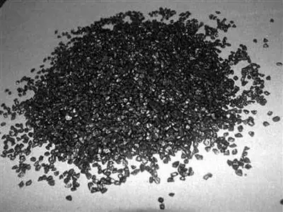
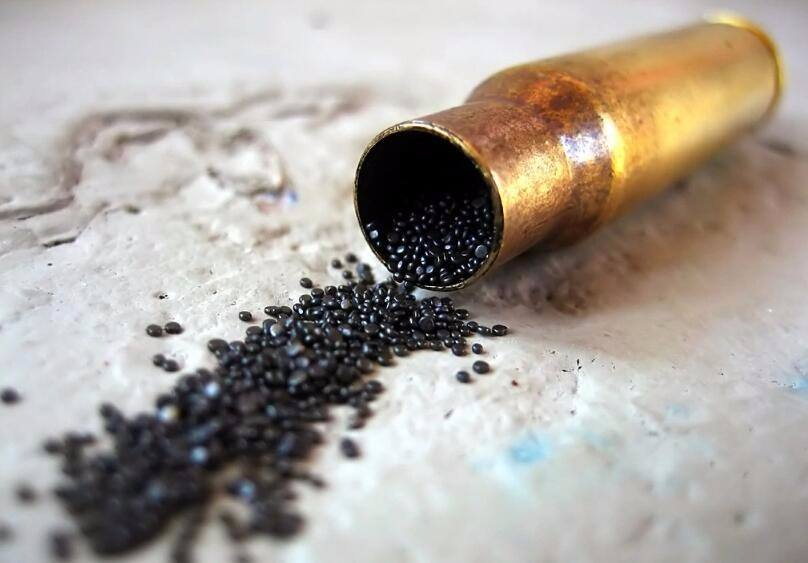

火药
|
|
火药，顾名思义，可由火花、火焰等引起剧烈燃烧的药剂。据《范子计然》的记载，春秋时代中国就已经用于民间民生应用，范子计然说“硝石出陇道”。
火药是中国四大发明之一。是在适当的外界能量作用下，自身能进行迅速而有规律的燃烧，同时生成大量高温燃气的物质。在军事上主要用作枪弹、炮弹的发射药和火箭、导弹的推进剂及其他驱动装置的能源，是弹药的重要组成部分。人类文明史上的一项杰出的成就。火药是以其杀伤力和震慑力，带给人类消停战事、安全防卫的作用，成为了人类文明重要发明之一。
发展与历史

火药，是以其杀伤力和震慑力，带给人类消停战事、安全防卫的作用，成为了人类文明重要发明之一。
据《范子计然》的记载，春秋时代中国就已经用于民间民生应用，范子计然说“硝石出陇道”。我国现在看到的第一部记载火药配方的书，约成书于八九世纪。书中说“以硫磺、雄黄合硝石，并蜜烧之”，会发生“焰起，烧手面及火尽屋舍”的现象。这里的“密”应该是蜂蜜的“蜜”。蜜加热能变成炭。硫磺、硝石与炭混合，这就是火药的配方。
火药的发明是人们长期炼丹,制药实践结果,至今已有一千多年历史。
唐朝末年,火药已被用于军事。唐昭宗天佑元年(904年)杨行密的军队围攻豫章,部将郑 (以所部发机飞火,烧龙沙门,带领壮士突火先登入城,焦灼被体)。这里所说的(飞火),就是(火炮),(火箭)之类。(火炮)是把火药制成环状,把吊线点燃后用抛石机抛掷出去;火箭则是把火药球缚于箭镞之下,将引线点燃后用弓射出。到了宋代,战争接连不断,促进火药武器的加速发展。北宋政府建立了火药作坊,先后制造了火药箭,火炮等以燃烧性能为主的武器和(霹雳炮),(震天雷)等爆炸性较强的武器。南宋在1259年造出了以巨竹为筒,内装火药的(突火枪)。到了元代又出现铜铸火统,称为(铜将军)。这些都是以火药的爆炸为推动力的武器,在战争中显示了前所未有的威力。下图为南未突火枪和北未火药箭。
在12,13世纪,火药首先传入阿拉伯国家,然后传到希腊和欧洲乃至世界各地。对人类社会的文明进步,对经济和科学文化的发展,起了推动作用。英法各国直到十四世纪中叶,才有应用火药和火器的记载。
火药的用途

1、军事上
在军事上主要用作枪弹、炮弹的发射药和火箭、导弹的推进剂及其他驱动装置的能源，是弹药的重要组成部分。人类文明史上的一项杰出的成就。火药是以其杀伤力和震慑力，带给人类消停战事、安全防卫的作用，成为了人类文明重要发明之一。
2、民用上
火药不仅可以在军事上运用，而且它还广泛运用于民间，比如逢年过节，人们将火药制成色彩斑斓的焰火来增加节日的欢乐气息。
3、工业上
在工业上广泛应用于采矿、筑路、兴修水利、工程爆破、金属加工等，还广泛应用于地震探查等科学技术领域。
|
联系我们:100010（工作时间：24h） 在线客服（24h无人接待）
自创备案号：1234-56789 Chrome商店下载版权与免责声明版权申诉出版物许可证